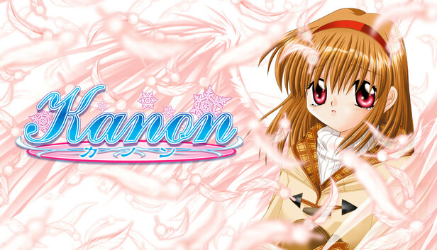

- Plot
- Gameplay
- Characters
Kanon is a Japanese visual novel developed by Key, a brand of Visual Arts. It was released on June 4,
1999, for Windows as an adult game. Key later released versions of Kanon without the erotic content, and
the game was ported to the Dreamcast, PlayStation 2, PlayStation Portable and Nintendo Switch. The story
follows the life of Yuichi Aizawa, a high school student who returns to a city he last visited seven
years prior, and he has little recollection of the events from back then. He meets several girls and
slowly regains his lost memories. The gameplay in Kanon follows a branching plot line which offers
pre-determined scenarios with courses of interaction, and focuses on the appeal of the five female main
characters by the player character. The game once ranked as the second best-selling PC game sold in
Japan, and charted in the national top 50 several more times afterwards.
